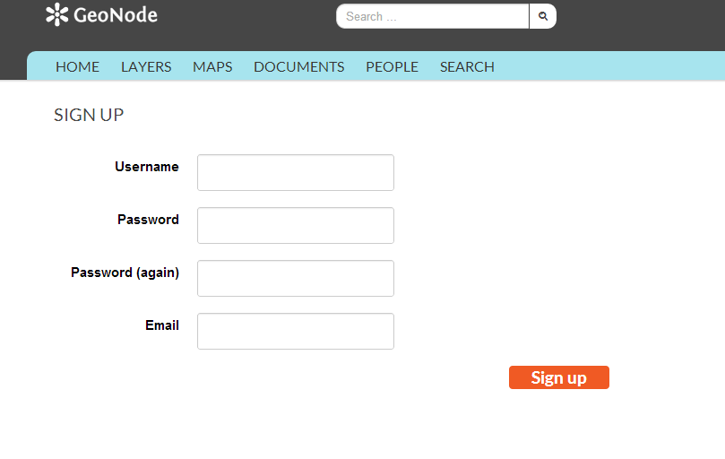
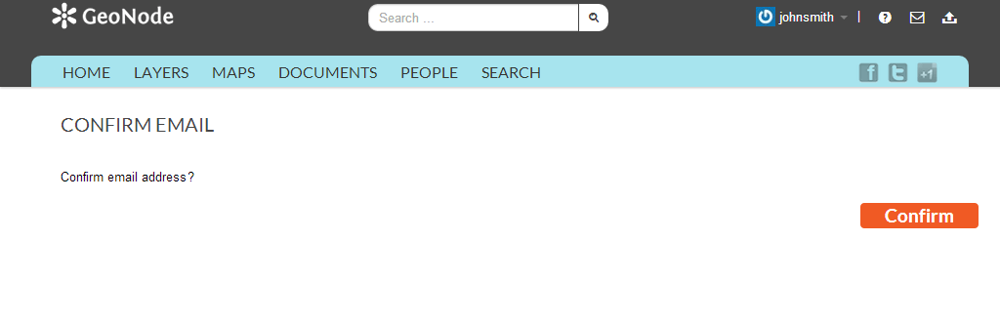

Creating a new account¶
Before you can save or edit any layers on a GeoNode instance, you need to create an account.
From any page in the web interface, you will see a Sign in link. Click that link, and in the dialog that displays, click the Register now link.

Sign in screen
On the next page, fill out the form. Enter a user name and password in the fields. Also, enter your email address for verification.
Registering for a new account
You will be returned to the welcome page. An email will be sent confirming that you have signed up. While you are now logged in, you will need to confirm your account. Navigate to the link that was sent in the email.
Confirming your email address
Click Confirm. You will be returned to the homepage.